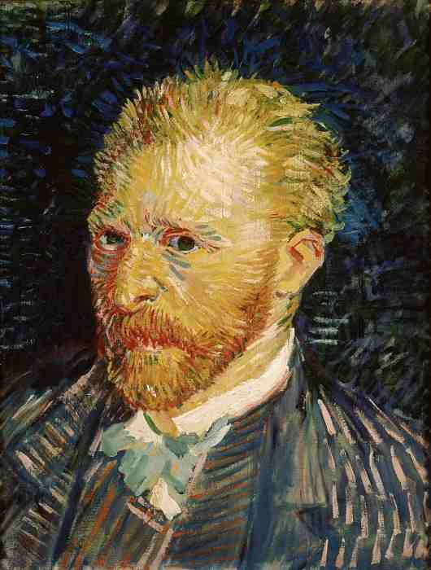
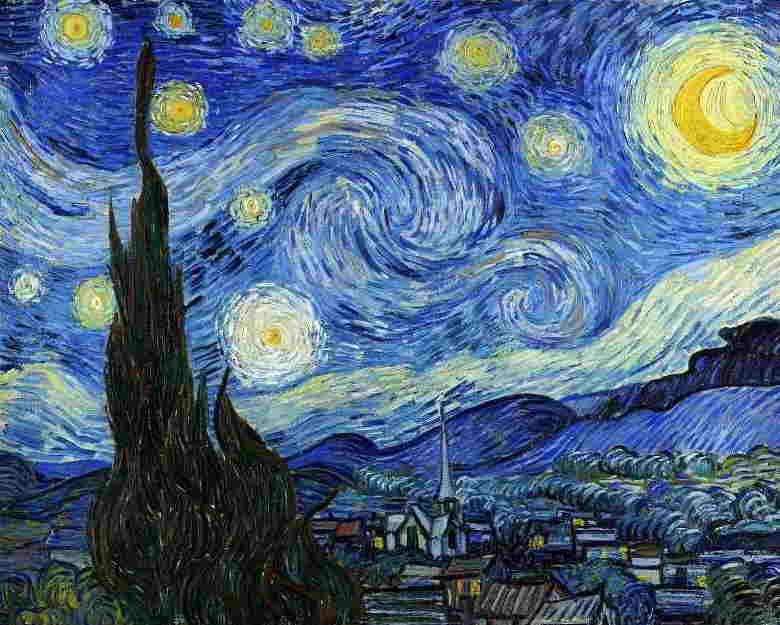
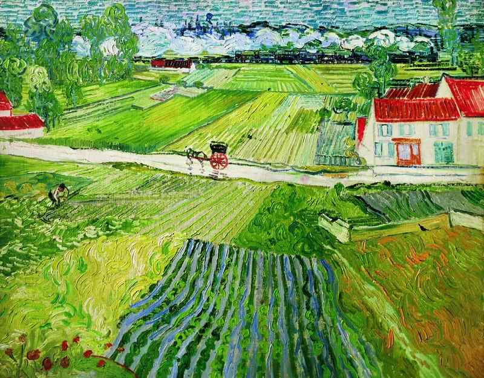
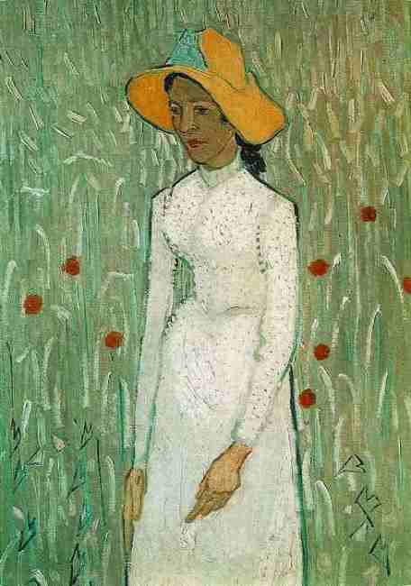

30.03.1953 - 28.07.1890
Винсент Ван Гог
Винсент Ван Гог – нидерландский художник, один из ярчайших представителей постимпрессионизма. В течение десяти с небольшим лет создал такое количество произведений, какого не было ни у одного из известных живописцев. Писал портреты и автопортреты, пейзажи и натюрморты. Так и не окончив школу, Винсент Ван Гог в 1869 году стал заниматься продажей картин. 27 июля 1890 года Винсент Ван Гог покончил жизнь самоубийством, выстрелив себе в грудь из пистолета.

Холст, масло. 73,7х92,1 см
Звёздная ночь
Мастеру было тесно в рамках реального мира. Он посчитал, что именно его фантазия, игра воображения необходимы для более полного изображения. Известно, что к моменту создания картины, автор проходил очередной курс лечения, ему разрешали работать только в случае улучшения состояния. Художник был лишен возможности творить на натуре. Многие работы в этот период (в том числе и "Звездную ночь") он создал по памяти.
Мощные, экспрессивные мазки, густые цвета, непростая композиция - все в этой картине рассчитано на восприятие с большого расстояния.
Символический смысл картины многие трактуют по-разному. Некоторые склонны видеть в картине прямую цитату Ветхого завета или Откровения. Кто-то считает излишнюю экспрессивность картины результатом болезни мастера.
Мощные, экспрессивные мазки, густые цвета, непростая композиция - все в этой картине рассчитано на восприятие с большого расстояния.
Символический смысл картины многие трактуют по-разному. Некоторые склонны видеть в картине прямую цитату Ветхого завета или Откровения. Кто-то считает излишнюю экспрессивность картины результатом болезни мастера.

1890. Холст, масло. 72x90 см
Пейзаж в овере после дождя
В картине «Пейзаж в Овере после дождя» поражает бесконечность пространства. Возникает ощущение, что не человек смотрит на природу, а природа глядит на него. «Голубые глаза огородов», -эта метафора Юрия Олеши как нельзя лучше выражает первое впечатление от полотна Ван Гога.
Образ будто умытой дождем земли трогает прозрачностью и свежестью. Пейзаж воспринимается как созданный непосредственной и наивной детской рукой: и нелепая повозка, и «карточные», хрупкие белые домики с яркими карминными крышами, и высокая линия горизонта, и густой дым, идущий из трубы игрушечного паровозика, - кажется, что весь этот мир, словно заново увиденный художником, сотворен на глазах зрителя.
Образ будто умытой дождем земли трогает прозрачностью и свежестью. Пейзаж воспринимается как созданный непосредственной и наивной детской рукой: и нелепая повозка, и «карточные», хрупкие белые домики с яркими карминными крышами, и высокая линия горизонта, и густой дым, идущий из трубы игрушечного паровозика, - кажется, что весь этот мир, словно заново увиденный художником, сотворен на глазах зрителя.

1890. Холст, масло. 66,7x45,8 см
Девушка в белом
Каждая работа постимпрессиониста Винсента Ван Гога автобиографична. Это произведение он закончил меньше чем за месяц до своего самоубийства. Душевнобольной художник только вышел из больницы и попытался снова заняться живописью, хотя жил в постоянном ожидании нового приступа.
Возможно, в этом холсте живописец решил воплотить образ своей души, выразив в облике крестьянской девушки все свои печали и переживания. Это одна из самых проникновенных и красивых по колориту картин художника. Хрупкое тело девочки, ее длинные худые руки с большими непропорциональными кистями, опущенные плечи, рассеянный взгляд больших глаз - все это передает ощущение тоски. И хотя вокруг героини распростерлась нежная зелень лета, она стоит среди колосьев пшеницы, будто покинутый всеми, одинокий дух полей.
Возможно, в этом холсте живописец решил воплотить образ своей души, выразив в облике крестьянской девушки все свои печали и переживания. Это одна из самых проникновенных и красивых по колориту картин художника. Хрупкое тело девочки, ее длинные худые руки с большими непропорциональными кистями, опущенные плечи, рассеянный взгляд больших глаз - все это передает ощущение тоски. И хотя вокруг героини распростерлась нежная зелень лета, она стоит среди колосьев пшеницы, будто покинутый всеми, одинокий дух полей.

Нажмите на картинку

1888. Холст, масло. 73x91 см
Красные виноградники в Арле. Монмажор
Пейзаж Ван Гога (1853-1890) поражает силой эмоционального напряжения, ощущением присутствия при возникновении мироздания. Раскаленный диск солнца расплавляет землю, виноградники охвачены тревожными багровыми тонами, и, будто сгорая на пожаре, дорога справа превратилась в поток солнечной лавы, лишь на первом плане лежат прохладные лиловые тени. Сборщики винограда кажутся порождением все той же могучей стихии, которая вызвала их словно из-под земли. Они вплетены живописцем в вечный круговорот природы. Солярный символ является неизменным в творчестве Ван Гога, он считал солнце источником жизни.